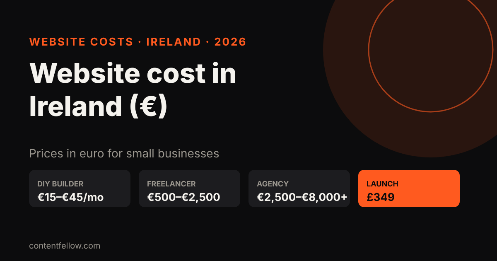
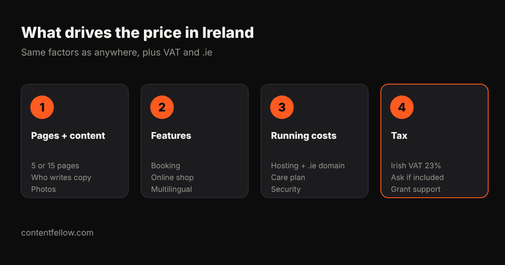

How Much Does a Website Cost in Ireland? 2026 Prices in Euro
How much does a website cost in Ireland?
Quick answer: A small business website in Ireland typically costs €500–€2,500 from a freelancer and €2,500–€8,000 or more from an agency, while online shops usually run from €1,500 to €15,000 depending on products and features. DIY builders cost about €15–€45 a month. ContentFellow builds fixed-price sites for Irish clients from £349 (roughly €400–€420 at current exchange rates), with no VAT added. (Updated October 2026.)
TL;DR: Budget about €1,000–€3,000 for a solid 5–10 page brochure site, more for booking or e-commerce, plus €10–€80 a month to host and maintain it. Always ask whether a quote includes Irish VAT at 23%.

Website prices in Ireland (2026)
| Type of website | DIY builder | Freelancer | Agency |
|---|---|---|---|
| 1–5 page brochure site | €15–€30/mo | €500–€1,500 | €2,000–€4,000 |
| 10–15 pages with blog and booking | €25–€45/mo | €1,500–€3,000 | €3,500–€8,000 |
| Online shop (WooCommerce, Shopify) | €30–€90/mo + fees | €1,500–€5,000 | €5,000–€15,000+ |
| Custom web app | n/a | €5,000+ | €15,000+ |
Ranges are typical quotes from Irish web design price pages and freelancer platforms checked October 2026. Agency prices often exclude VAT.

Ongoing costs
- .ie domain: about €20–€40 a year (you need a connection to Ireland, which most Irish businesses have).
- Hosting: €5–€30 a month for a small site.
- Maintenance: €30–€150 a month for updates, backups and security.
Can I get help paying for a website?
Irish businesses have historically been able to apply for the Trading Online Voucher through their Local Enterprise Office, which has covered part of the cost of e-commerce and online trading projects. Check the current terms with your Local Enterprise Office before you commit, as rules and amounts change.
ContentFellow prices for Irish businesses
We're based in Burnley, UK, and build for clients in Ireland remotely. Prices are fixed, in pounds, and include everything (we're not VAT registered):
| Package | Price | Rough euro equivalent |
|---|---|---|
| Launch (up to 7 pages) | £349 | ~€400–€420 |
| Grow (up to 15 pages, blog, booking) | £749 | ~€860–€900 |
| Shop (up to 100 products) | £1,499 | ~€1,720–€1,800 |
Pay 50% upfront and 50% at launch. After launch, care plans start at £49 a month (Care), or £69 for Build Fellow, or £159 for Care Plus. See development packages and website care plans. Euro figures depend on the exchange rate on the day you pay.
UK comparison: how much a small business website costs in the UK.
Frequently asked questions
How much does a website cost in Ireland?
Usually €500 to €2,500 from a freelancer and €2,500 to €8,000 or more from an agency for a small business site. Online shops cost more.
Do Irish web designers charge VAT?
VAT-registered businesses in Ireland add VAT at 23%. Always ask whether a quote includes it.
How much does an online shop cost in Ireland?
Typically €1,500 to €5,000 from a freelancer and €5,000 to €15,000 or more from an agency, plus platform and payment fees.
Can a UK company build my Irish website?
Yes. Many sites are built remotely. ContentFellow builds fixed-price sites for Irish clients from £349.
Is there a grant for websites in Ireland?
The Trading Online Voucher from Local Enterprise Offices has supported online trading projects. Check current eligibility with your local office.
See all services and prices → · More quick answers on our answers page. Want a site you own? See development packages and website care plans.
Sources: ContentFellow plans and prices from contentfellow.com/pricing/ (October 2026); market ranges are typical quotes from UK freelancer marketplaces and agency price pages checked October 2026. Prices include everything: ContentFellow is not VAT registered. Last updated 19 October 2026.